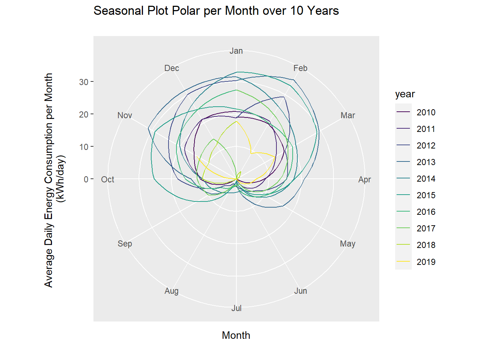

7.3 Polar
7.3.1 Goal
Plot a seasonal plot as described in Hyndman and Athanasopoulos (2014, chapter 2.4):
Figure 7.5: Seasonal Plot Polar per Month over 10 Years
This is like an overlapping time series plot which uses polar coordinates. Be aware that seasons in this context don’t correlate with the seasons of the year.
7.3.2 Data Basis
In general, the values of energy meters, as in our example, increase steadily:

Figure 7.6: Raw Data for Seasonal Plot Polar
7.3.3 Solution
Create a new script, copy/paste the following code and run it:
library(forecast)
library(dplyr)
library(plotly)
library(htmlwidgets)
library(ggthemes)
library(viridis)
library(lubridate)
# load csv file
df <- read.csv2("https://github.com/hslu-ige-laes/edar/raw/master/sampleData/flatHeatAndHotWater.csv",
stringsAsFactors=FALSE)
# filter flat
df <- df %>% select(timestamp, Adr02_energyHeat)
colnames(df) <- c("timestamp", "meterValue")
# calculate consumption value per month
# pay attention, the value of 2010-02-01 00:00:00 represents the meter reading on february first,
# so the consumption for february first is value(march) - value(february)!
df <- df %>% mutate(value = lead(meterValue) - meterValue)
# remove counter value column
df <- df %>% select(-meterValue)
# value correction (outlier because of commissioning)
df[1,2] <- 600
df.ts <- ts(df %>% select(value) %>% na.omit(), frequency = 12, start = min(year(df$timestamp)))
# create polar plot
numYears = length(unique(year(df$timestamp)))
plot <- ggseasonplot(df.ts,
col = viridis(numYears),
main = "Seasonal Plot Polar per Month over 10 Years\n",
ylab = "Energy Consumption (kWh/month)",
polar = TRUE
)
# show plot (interactive version with plotly unfortunately not possible)
plot
7.3.4 Discussion
This representation emphasizes the high consumption in summer very well, which could undoubtedly be reduced in a residential building. The Years 2018 and 2019 show, that this optimization was done.
To emphasize this optimization please refer to the next chapter 7.4.